Adventures in Alba
Example Campaigns — Ready-to-run adventures and a small linked campaign for Adventures in Alba
How campaigns work
A campaign for this age is a string of friendly episodes. Each session should have a clear helper, a magical place, one puzzle, and one warm ending.
- Start with a read-aloud box.
- Ask one choice at a time.
- Use three scenes: arrive, discover, help.
- End with a sticker, drawing, or named promise.
| Minute | What to do |
|---|---|
| 0–5 | Read the hook and ask what the heroes notice. |
| 5–15 | Meet a creature or obstacle with a feeling. |
| 15–30 | Try two or three adventurer ideas, rolling only for exciting moments. |
| End | Name the friend helped and draw one treasure. |
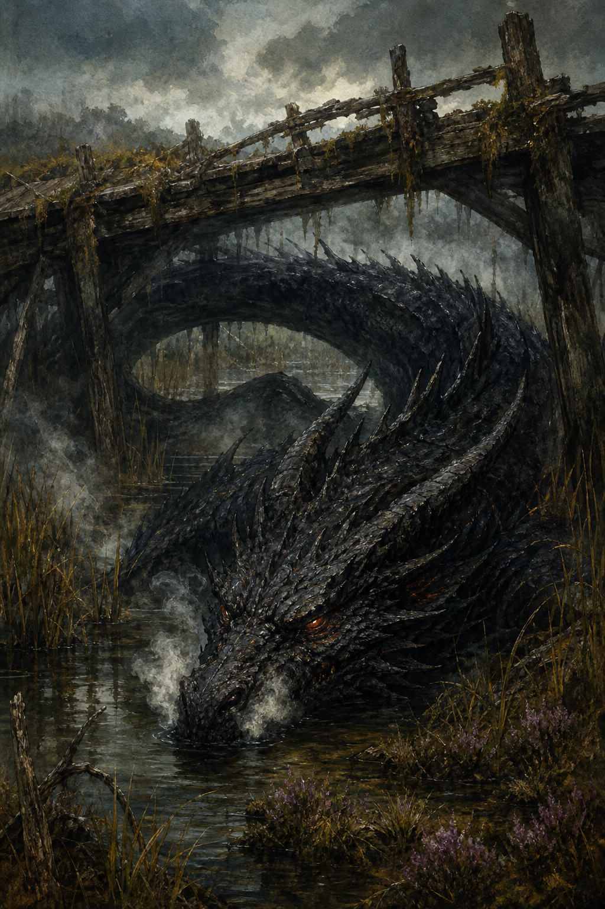
Adventure 1: The Lost Moon-Bell
Scenes
- Meet the nervous kelpie foal.
- Search reeds, stones, or bubbles for clues.
- Return the bell by singing, wading, or asking the loch nicely.
Roll moments
| Idea | Stat |
|---|---|
| Step onto slippery stones | Agility |
| Comfort the foal | Wis |
| Hold the rope in a gust | Strength |
| Notice bubbles making an arrow | Wis |
| Promise to bring the bell back | Luck |
Ending choices
- The kelpie foal carries everyone one careful step across the shallows.
- The loch hums the first note of the bedtime song.
- A wet map reveals the next path when it dries.
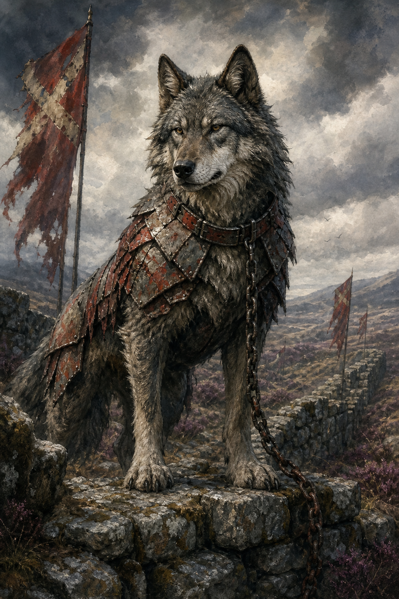
Adventure 2: The Grumpy Bridge
- The bridge is not mean; it is embarrassed because moss covers its carvings.
- Adventurers can clean, joke, sing, draw, or ask what happened.
- A wobble makes the bridge sneeze pebbles, not hurt anyone.
Extra clues
- Moss hides a carved smiling face.
- The bridge remembers adventurers who thanked it long ago.
- A silver fox waits on the other side with dry socks.
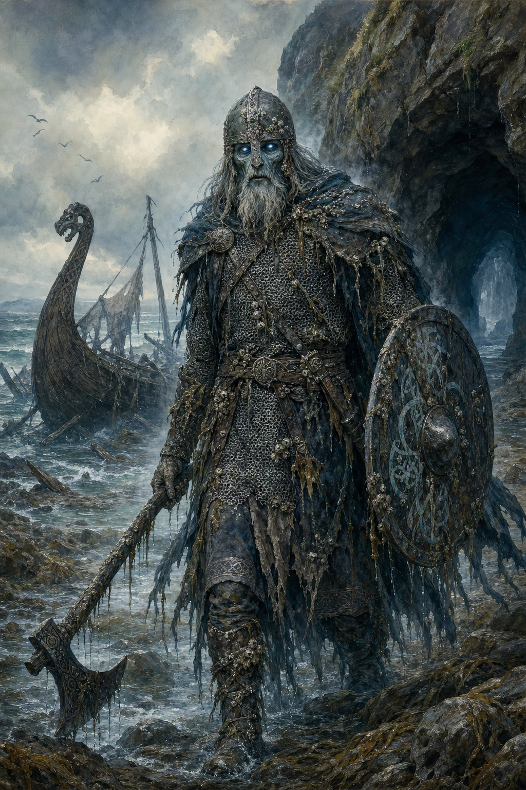
Adventure 3: The Thistle Crown
What is really happening?
The sprite is scared of guarding the path alone. It needs help making a promise flag.
Good solutions
- Make a tiny flag.
- Share a brave story.
- Ask another creature to visit.
- Let the sprite choose a less lonely job.
If the heroes wobble
- The crown slips over the sprite’s eyes.
- The path grows extra thistles, but they smell like jam.
- The sprite declares a snack break and forgets to be bossy.
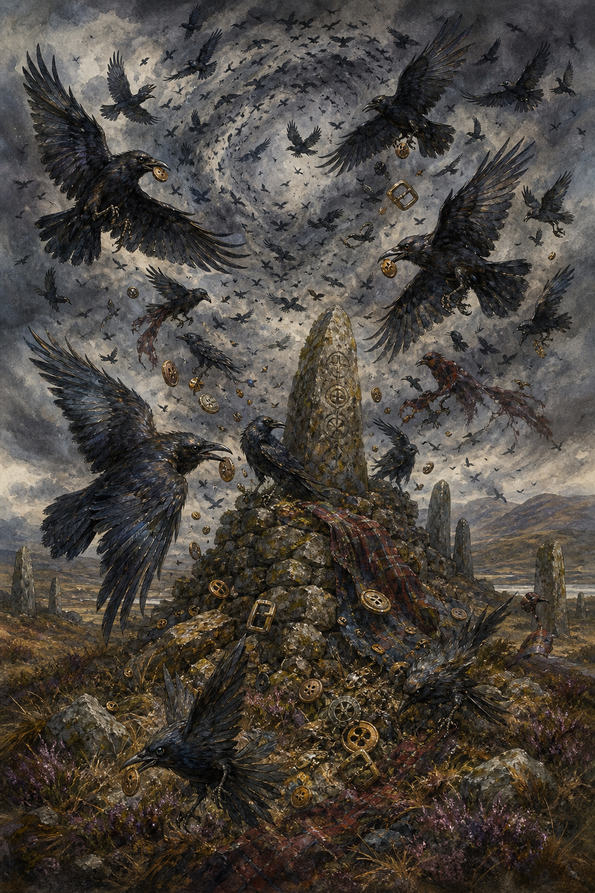
Mini campaign tracker
| Session | Bell or promise | Friend made | Drawing space |
|---|---|---|---|
| 1 | Moon-Bell | ||
| 2 | Bridge rhythm | ||
| 3 | Thistle Crown promise | ||
| Finale | Bedtime song returns |
If time is short
Run only the hook, one helpful creature, and the warm ending.
If adventurers want more
Let them draw the new friend, then turn the drawing into the next adventure hook.
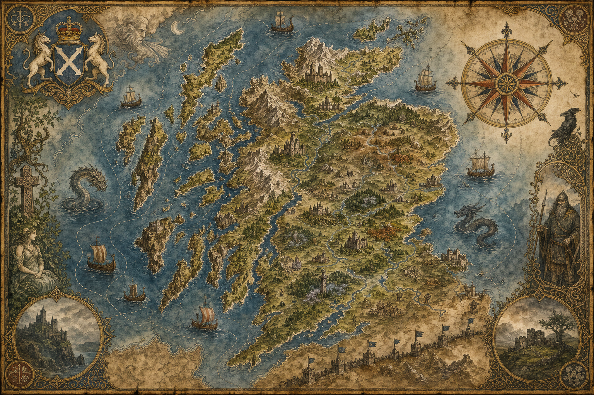
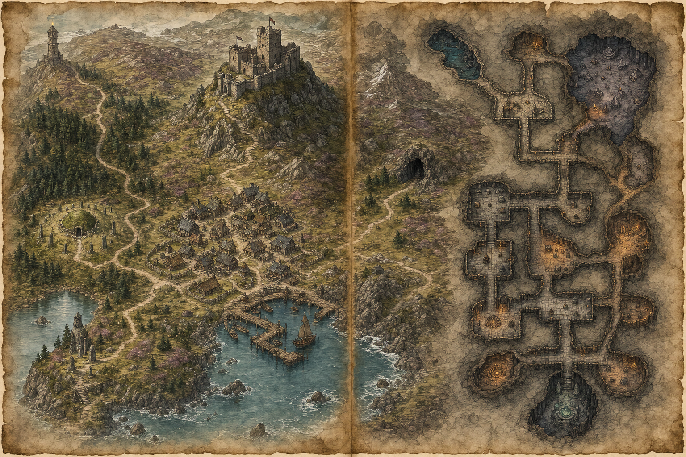
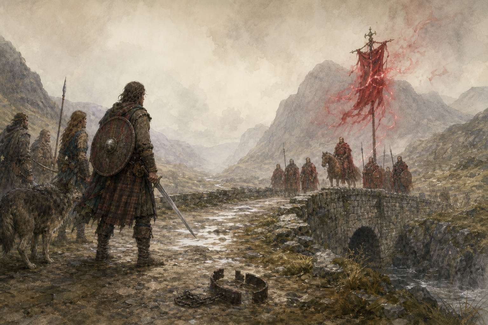
Campaign 2: The Red Banner Road
Six-session arc
| Session | Episode | Main pressure |
|---|---|---|
| 1 | Taxes at Kettleford Bridge | Redcloak patrol demands coin and maps. |
| 2 | The Stolen Standing Stone | Albion surveyors move a fairy boundary marker. |
| 3 | Warg with the Iron Collar | Free a border warg from command magic. |
| 4 | Clan Moot under Rain | Unite rival clans without starting a feud. |
| 5 | Raid on the Red Supply Cart | Rescue prisoners, charms, and stolen maps. |
| 6 | The Banner That Lied | Break an enchanted conquest banner. |
Villain note
The Dominion of Albion is a fantasy imperial faction. Do not say every southerner is evil; make the villains the army, greedy nobles, cursed banners, and officials trying to erase Alba's names.
Scene tools
Redcloak patrol
2 guards, 1 tax-mage, one nervous local guide.
Moral choice
Rescue prisoners now, or steal the map that saves three villages later?
Magic problem
The banner makes locals forget their own hill names.
Reward
Clan reputation, a freed warg ally, or a red-sealed map.
Recurring place
Kettleford Bridge changes each visit: tax chain, rumor crowd, warg tracks, then banner shadow.
Boss prep
Redcloak Captain carries orders, fear, and a banner tassel that points to the final true-name ritual.
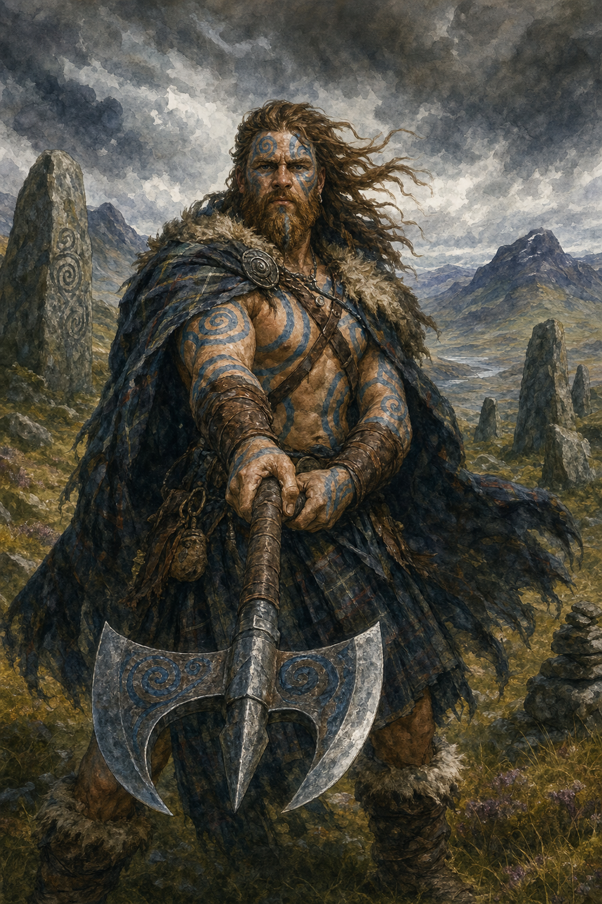
Red Banner Road: session packets
1. Taxes at Kettleford Bridge
Read aloud: Red cloaks block the bridge while a nervous goat chews their map. Goal: protect villagers without starting a battle. Key rolls: Wis to calm the crowd, Int to spot false tax marks, Strength to hold the bridge chain. Reward: bridge oath token.
2. Stolen Standing Stone
Surveyors moved a fairy border stone. Goal: learn its true name and roll it home. Wobble: the wrong hill wakes first. Reward: Rowan Compact favour.
3. Iron-Collar Warg
A warg attacks because a collar commands it. Goal: break the collar, not the wolf. Clues: red wax seal, rubbed fur, sad eyes. Reward: possible earned mount/ally.
4. Clan Moot in Rain
Two clans accuse each other of helping Albion. Goal: prove the tax-mage forged both letters. Use truth-song, guest-right, and one brave speech.
5. Red Supply Cart
Sneak, bargain, or distract to free prisoners and stolen charms. Add a three-bell countdown before patrol returns.
6. Banner That Lied
Finale: the conquest banner renames hills. Break it with true names gathered from every prior session. Boss phase: Redcloak Captain loses command when locals sing.
Recurring NPC: Nessa Toll-Keeper
Starts afraid of Redcloaks; becomes brave if the heroes protect her bridge bell. She can hide messages in toll receipts.
Evidence trail
Each session yields one proof: false tax seal, moved boundary chip, broken collar rune, forged clan letter, prisoner list, banner true name.
Escalation clock
After every session, mark one red wax dot. At three dots, patrols double. At six, the conquest banner reaches Kettleford.
Finale checklist
To beat the banner: gather three true hill names, cut the red wax tassel, and have a local speak the land oath aloud.
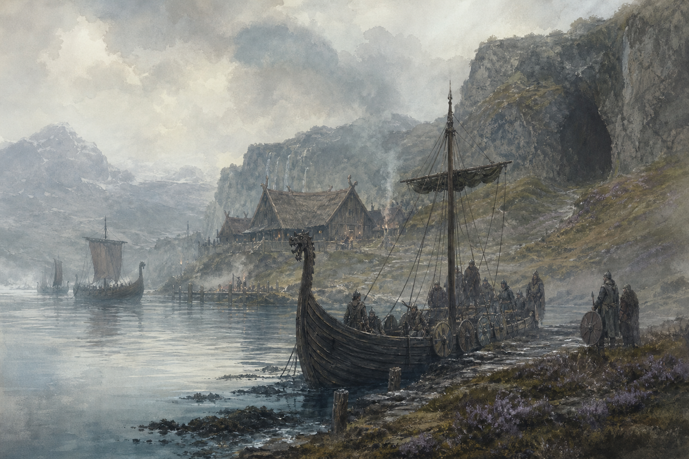
Campaign 3: Longships in the Mist
Harbor Hook
A longship appears with no crew, one blue lantern, and a shield carved with a broken oath.
Friendly Viking
Jorunn Wave-Smith wants peace, trade, and help laying her ancestor draugr to rest.
Raider Threat
Skull-Sail Rurik steals bells because he thinks they command fairy weather.
Sea Magic
Runes, whale-road maps, storm knots, salt charms, oath rings, and ghost anchors.
Episodes
- The Empty Longship
- Market Day under Axes
- Draugr in the Sea Cave
- The Storm-Knot Duel
- Feast-right at the Clan Hall
- The Oath-Raiders Rest
Sea encounters
| 1 | Fog hides a friendly trader and a hostile raider. |
| 2 | A seal-spirit demands the party judge an oath. |
| 3 | Draugr row beneath the boat at midnight. |
| 4 | A storm knot must be untied with song. |
Harbor clock
At three bells, market closes. At six bells, raiders choose a target. At nine, the tide opens the sea cave.
Peace route
A feast, repaired sail, and returned oath-ring can turn raiders into rivals instead of enemies.
Treasure route
Each episode gives one ship-token clue: lantern, shield, ring, cup, knot, final oath.
Draugr route
If ignored, the ghost crew grows louder and colder; if honored, they guide the party through fog.
Longships in the Mist: session packets
1. Empty Longship
The ship arrives crewless with one blue lantern. Search cargo, comfort frightened harbor folk, learn the shield oath.
2. Market Day Under Axes
Traders and raiders argue. Keep guest-right, separate Skull-Sail Rurik from peaceful Jorunn, and save the bell stall.
3. Draugr Sea Cave
Return a stolen ship-token while tide rises. Rolls: Agility on slick rocks, Wis for oath grief, Luck for storm timing.
4. Storm-Knot Duel
Untie weather knots by song, riddle, and courage. Wobble: rain falls upward for one scene.
5. Feast-right Hall
Win peace through food, story, and one fair challenge. No fighting under the roof once bread is shared.
6. Oath-Raiders Rest
Finale: complete the oath carved on the shield so the dead rowers can sleep and the living can trade.
Recurring NPC: Jorunn Wave-Smith
Friendly Norse smith-trader. She offers repairs, sea lore, and a moral reminder that not every longship comes to raid.
Oath clues
Broken shield, blue lantern, missing ring, drowned map, feast cup, and the final carved promise all point to the same betrayed voyage.
Sea travel rhythm
Each voyage scene gets weather, sound, choice: fog + oars + steer toward harbor or cave; storm + gulls + cut sail or sing.
Finale checklist
Return the ship-token, feed the living crew under guest-right, speak the shield oath, and let the draugr choose rest.
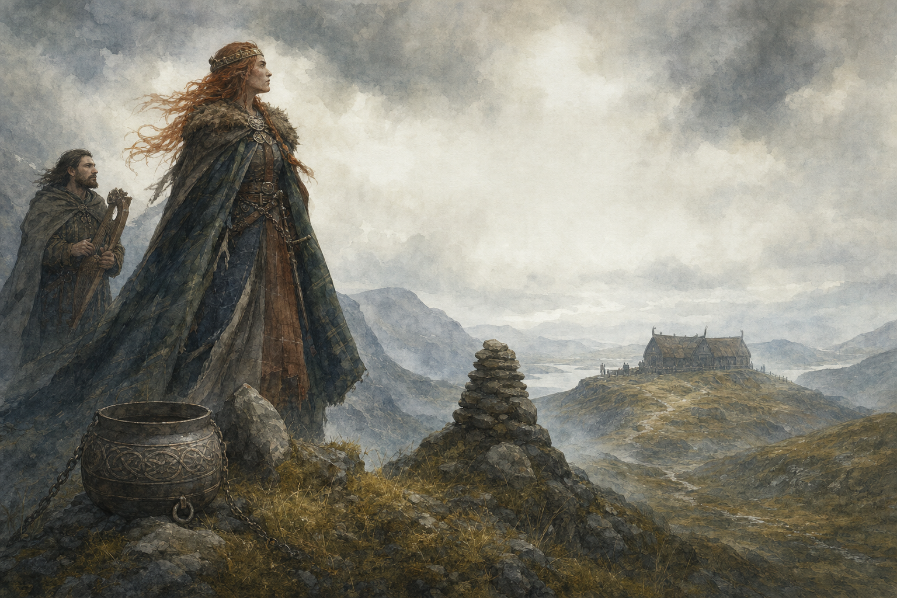
Campaign 4: The Barbarian Queen of the North
Key NPCs
| Name | Role | What they want |
|---|---|---|
| Queen Maev Stormbraid | Clan war-leader | Return of a stolen clan cauldron. |
| Old Duthac | Oath poet | Someone to remember the true story. |
| Bran of the Broken Axe | Hot-headed champion | A fair duel, not a massacre. |
| Eithne Rowan-Seer | Seer | The Thorn Court kept out of clan dreams. |
Adventure structure
- Prove guest-right by sharing food.
- Solve a stolen-cauldron mystery.
- Stop a duel using truth, not force.
- Enter the storm cairn and face an oath monster.
- Choose whether clans join Alba against the Dominion.
Clan customs
| Guest-right | Food shared means no one may attack under that roof. |
| Truth-song | A bard may settle disputes by singing the true version. |
| Fair challenge | A duel can be riddle, wrestling, race, poem, or shield-hold. |
Respect scene
Before each roll, ask: do you speak as guest, challenger, witness, or helper? The answer changes the stat.
Cauldron clues
Ash on red wax, wagon tracks, missing feast song, and a frightened page point to Albion theft.
Duel variants
Run Bran’s duel as race, shield-hold, riddle, wrestling, poem, or carrying water through wind.
Alliance reward
If won respectfully, the party earns storm-clan shelter and a cairn goat companion hook.

Barbarian Queen: session packets
1. Guest-right Test
The heroes must share food and answer a challenge without insulting the storm-clans. Reward: safe fire and one honest question.
2. Stolen Cauldron
Investigate tracks, lies, and red wax. Twist: Albion agents stole the cauldron to stop clan feasts.
3. Broken Axe Duel
Bran demands a duel. Make it race, riddle, shield-hold, poem, or wrestling with non-lethal stakes.
4. Storm Cairn
Enter the cairn, face an oath monster, and return the queen's ancestor story. Use thunder as a countdown.
5. Queen's Choice
Convince Maev Stormbraid to join Alba against the Dominion by proving respect, truth, and returned treasure.
6. Pass of Two Banners
Finale: storm-clans and lowland clans stand together while the Red Banner road closes. Earn clan cloak or cairn goat companion.
Recurring NPC: Old Duthac
Oath poet who never lies but tells truths in riddles. He can turn a failed argument into a fair challenge.
Clan respect track
Gain respect for shared food, fair challenge, returned cauldron, remembered ancestor, and refusing Redcloak lies. Lose it for insults.
Storm signs
Thunder answers broken oaths. Lightning points at hidden red wax. Rain stops when someone tells the true story.
Finale checklist
Return the cauldron, settle Bran without humiliation, name the ancestor, and ask Maev for alliance as an equal.
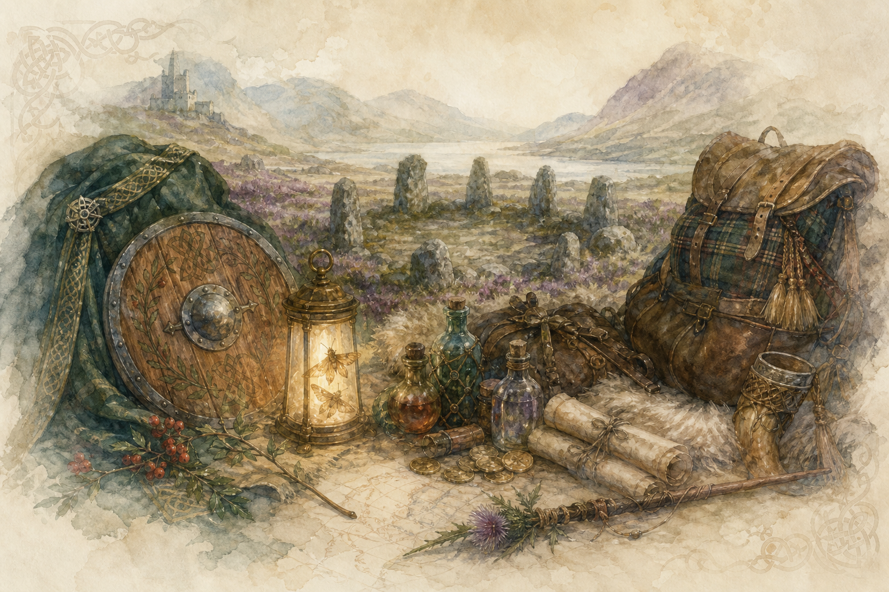
Encounter maps and travel procedures
Travel turn
- Pick route: road, moor, loch, forest, coast, old Roman road, fairy path.
- Choose pace: careful, normal, urgent.
- Roll one travel event if the route is dangerous.
- Mark food, weather, one rumor, and one map change.
Map symbols
| Castle | law, soldiers, taxes |
| Cairn | oaths, ghosts, memory |
| Loch | water magic, kelpies, secrets |
| Longship | raids, trade, oaths |
Travel events
| 1 | Redcloak patrol measuring land. |
| 2 | Norse trader offers a cursed bargain. |
| 3 | Barbarian scouts test guest-right. |
| 4 | Fairy ring moves the road. |
| 5 | Monster sign: claw marks, cold fog, iron feathers. |
| 6 | Helpful local: shepherd, fisher, brownie, corbie messenger. |
After travel
- Ask one player to mark the route on the map.
- Ask another to name a rumor learned on the road.
- If a companion helped, advance its bond if the table cared for it.
- Turn one travel event into tomorrow’s hook.
Route costs
| Careful | safe clue, slower clock. |
| Normal | one event. |
| Urgent | arrive fast, start with mud/noise/tired companion. |